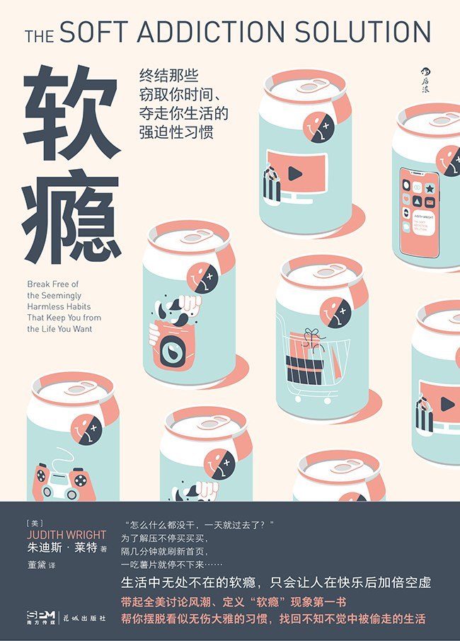

|  |
软瘾：终结那些窃取你时间、夺走你生活的强迫性习惯 |
导论
大多数人一听到这个词，就会立刻几乎凭着直觉自动理解了它的含义以及普遍性。无论是过去还是现在，他们的反馈始终令我感到惊讶。更令我惊喜的是，他们在摆脱软瘾后换回的时间、金钱、爱与成就感是多么可观。在我的研讨会上，人们会估算他们为软瘾付出的实际成本。出人意料的是，他们估算的自己如今为软瘾——从买咖啡到网上购物——付出的最低实际花费仅仅在每年3000美元左右，而大多数研讨会的平均水平都在15000美元到18000美元之间。这仅仅是金钱方面的进步，你可以想象一下他们重获的亲密感和满足感又会如何。
我遇到过一味追求结果的高管，他们看到了自己低效的工作模式如何阻碍自己获得成就和满足感。还有一些夫妇在两性关系中失去了激情，他们整晚都心不在焉，而非投入地享受生活。做父母的告诉我们，每个家庭成员晚上都待在不同的房间里，盯着不同的屏幕，看电视、打游戏、聊天或只是上网冲浪。单身人士承认，他们要么独来独往，要么在约会软件上发布精心包装过的自我介绍，而不是冒险走出去，展现真实的自己。女性谈论着如何用“本和杰瑞”牌冰激凌来安慰自己，而不是出去见见真正的“本”和“杰瑞”们。孩子们说他们沉迷于电视、电脑、游戏和零食，从不会出去玩或与现实中的同龄人来往。男性承认他们对运动、电子产品和色情产品上瘾，而女性则承认自己会狂买、狂化妆、狂打扫、狂锻炼和狂聊八卦。
软瘾是一种普遍现象，虽然有些很普通，但也有些比较个人化。
- “我过得一团糟。”
- “我会在网上浪费好几个小时。”
- “我把时间浪费在睡觉上，我在逃避我的生活。”
- “我把生命浪费在看我根本不想看的电视节目上。”
- “我工作得越来越晚，这样我就可以不用回家了。我觉得我在工作上能力很强，但在个人生活上却不行。”
- “我每个周末都去旧货市场，希望淘到东西来丰富我的收藏。”
这个问题的解决会让精英人士的职业生涯焕然一新，帮家庭成员获得拉近距离的新方法，帮孩子们取得更好的成绩，甚至也能帮伴侣挽救婚姻。当你用你真正想获得的充实取代你的软瘾时，你会惊讶于自己拥有的资源和满足感。为了做到这一点，你必须转变“没错，但是”的思维逻辑。
通过这本书，你会明白你有一种深沉、神圣的渴望是值得被满足的，而没有任何软瘾能触及你内心的那个地方，无论你尝试多少次。软瘾应对方案的中心是“核心决定”——选择过一种内涵更充实的生活。这件事做起来比听上去重要得多，也困难得多，这就是为什么我写了整本书来阐述核心决定的奇妙之处。你做好核心决定后，你的生活就会被一种有影响力的价值观统一起来。你就会找到方向，能够为自己设想出一种理想的生活。核心决定给了你力量，让你更容易摆脱那些曾经阻碍你实现梦想的习惯。你会重新获得感受的力量，而不再感到麻木。你欢笑，哭泣，充满能量和激情，承认你的恐惧，得到你需要的安慰和鼓励。你向前迈进，不被你经历过的任何事拖累。你所走的每一步都会为你的生活创造更充实的内涵。你不仅摆脱了自己的软瘾，还创造了一种美好的生活方式，它丰富，令人满足，鼓舞人心，健康，有趣，有创造力，美丽，能提高生活质量，而不是让你的生活如一潭死水。
当我还是个孩子的时候，我就觉得有些东西缺失了，有些事不对劲，但我不知道怎么描述。有些东西不太正常，不仅仅是对我自己来说，我周围的世界也是如此。人们似乎不太开心，也不太活跃。他们只是生活在各自的房子里，但那些地方不能被称为“家”。他们很忙，但并不充实。虽然他们可能在做一些应该很有趣的事，但他们看起来并不享受。他们会交谈，但并没有建立真正的联系。这里的生活是孤独的，充满了流于表面的活动——缺乏活力的活动，到处是敷衍了事的空间和心不在焉的面孔。我感到所有人都陷在雾里，裹在棉花里。有时我会想，是不是这个世界没问题，是我不正常。但在内心深处，我知道人们的生活中缺少了一些东西。我当时不知道什么样的情况才是对的，所以我继续沉迷于我的软瘾——暴饮暴食，看电视，咬指甲，埋头学习。
我不认识几个过上理想生活的人。大多数人对自己的生活随遇而安，或是虽然会抱怨却没有做什么改变。他们放弃了自己的梦想，为了体面的工资和福利安定下来。我记得我当时想，如果人长大就是为了这些，那我还真不想长大了！我只知道我想要更多，但不知道“更多”具体指什么、如何得到，甚至不知道是否真的存在这种拥有“更多”的生活。
当我没有忙于做些什么来分散注意力时，我就会感到空虚和饥饿。我的心很痛，尽管当时我不知道该如何用语言来表达这种感觉。我经常感到空虚，或者觉得自己像一个几乎不存在的幽灵。我知道有些事不对劲，但不知道是哪里出了问题。我觉得生活不该是这样的，但这是我知道的唯一的准则——努力工作，取得成就，然后看着电视走神，机械地往嘴里塞着东西。
成长到青年时，我遵循着同样的准则。在大学里，我是个优秀的学生，在我的年纪也算小有成就；28岁时，我已经在两个不同的领域获得了全美范围内的认可。但是，尽管我取得了成就，我仍然感到空虚、不快乐、不满意。在寻找这种沮丧的根源时，我认为我仍然不快乐的真正原因是我很胖，所以我开始节食减肥。后来，我成功了，变得苗条了——但也依然不快乐。
于是我认为，我不快乐一定是因为我没有谈恋爱，所以我找了我大学时的男友，一个长得像史泰龙却拥有天才智商的人。然后我确信我拥有了一切：成功、我想要的身材以及一个天才男友。但事实并不是这样。我仍然不快乐，空虚，绝望。
从外表看，我一切都很好，但我内心却很痛苦。我不知道还能做什么。我以为我找到了秘诀，但这些方法都行不通。因此，我开始将行为升级，开始给每一件事加码——更努力工作，参加更多聚会，买更多东西，发掘越来越多的娱乐活动。我购物，看电视，闲逛，约会，直到精疲力竭。我对自己和生活感觉越来越糟，越来越空虚、悲伤、失落和歇斯底里。
我开始把这两种对我成长有影响的职业经历结合起来。令我惊讶的是，我意识到，尽管我取得了许多成功，但那些照亮了我的日子的学生和他们那些深深激励和感动了我的父母的生活质量比我高。他们生活中的成功与拥有完美的思想、完美的身体、完美的配偶或完美的环境无关。它与完美无关，也与我一直以来的生活法则无关。
我的核心决定
就在我最难过的时候，这些人的行为让我产生了最深刻的领悟，使我做出了自己的核心决定——一个从此永远改变了我的生活的意义深远的决定。我对自己宣布，我不要再浑浑噩噩地过日子了。这成了我生命中一个明显的转折点。我决定要感受我的生命，清醒、充满活力地生活，尽一切努力保持这种方式，并帮助其他人也这样生活。我要过一种懂得感恩的生活，丰富我的精神世界——我不想做空洞、肤浅、盲目的承诺，而要真正实现从内而外的蜕变，就像我有幸看到的灯塔般的人们那样。
正是在这个决定的基础上，我积极地追求着更充实的生活，寻找那些让我感觉更清醒、更真实、更有活力的事物。然后我震惊地意识到，我所做的一切试图让自己感觉更好的事情，实际上只会让我失去对生活的感知。暴饮暴食、疯狂购物、疯狂学习、参加聚会、闲聊八卦、阅读杂志和沉迷于电视已经让我变得麻木了。尽管我觉得自己不得不去做这些，但它们实际上让我分了心，剥夺了我获得我渴望的更大满足感的机会。我做这些事越多，就离充实越远。这些事就是所谓的软瘾。
我意识到，大多数软瘾不过是为逃避情绪而做出的错误尝试。通过摆脱软瘾，我学会了尊重自己的感受。我不再远离情绪，而是朝着它走去。我在生活中获得了更多爱意后，吃的糖果都少了。我开始摄取更多有营养的食物，参加更有意义的活动，实践更令人满意的生活方式。比如，泡热水澡比喝酒更能让人放松，还不会对我的意识产生消极影响，也不会留下任何不良的后遗症。纵情大笑、祈祷、体验片刻喜悦的感受比酗酒或嗑药的快感好多了。阅读伟大的文学作品比木然坐在电视机前的感觉更好。由衷的大笑、叫喊甚至痛快的哭泣都会给我带来心灵的宁静，这是任何无意识的机械行为都无法实现的。学会倾吐更深层次的真实、不保留秘密、坦承自我的行为会让我害怕，但同时也让我感到解脱。
第1章 你的生活应该更充实
无论我们是行业精英、世界冠军、差等生还是介于这些极端之间，我们都希望生命能够更充实。具有讽刺意味的是，我们渴望从生活中得到更多，却没有付出我们真正需要为此付出的努力。统计数据显示，我们中几乎每一个人，无论是否成功，都多少有些消极行为和习惯。它们不仅干扰我们追求充实，而且在我们得偿所愿后还会让我们的乐趣大打折扣。我们的生命——时间、精力、意识和生命力——就在对宝贵资源的浪费中过去了。我们沉迷于看电视、购物、上网、暴饮暴食、聊八卦或被我称为“软瘾”的其他无数日常习惯。
从贫瘠到充实
我的软瘾经历
我工作很努力、很成功，但在没有负责什么项目也没有因为什么项目获奖时，我会没完没了地购物或浏览我买不起的东西，和别人八卦我们共同的朋友或名人的生活，沉迷于翻阅商品目录，或者想象自己穿上那些最新的时装是什么样。我工作得越努力、时间越长，取得的成绩就越多。我得到的赞扬越多，我就越觉得有理由去买更多东西，或者更加心不在焉。我努力工作了，所以这是我应得的。尽管我取得了高质量的成果，但我总是匆匆忙忙的，几乎做什么都迟到，家中杂物遍地，水槽里堆着脏盘子，卧室里散落着昨天的衣服。我会反思我做错的每一件事，在心里自我打击，并对得到的一切赞美不以为然。
什么是软瘾
软瘾不是罪，它们只是一种安抚自己的错误尝试，一种在一天的劳累后试图放松的方法，一种分散注意力或自娱自乐的方法，或者一种应对强烈情绪的方法。问题是，软瘾不会丰富我们的生活，实际上反而会耗尽我们宝贵的资源，而这些资源本可以用来推动我们实现梦想。它们不会关爱我们，不会鼓舞我们，也不会给我们应得的安慰。它们会夺走我们的东西，而不会给我们带来多少回报。我们都需要从压力重重的生活中抽空休息一下，都需要娱乐、休息、消闲，但我们应该得到优质的休息——不仅仅是盯着电脑屏幕，或者在电视机前心不在焉地换台。我们需要令人满足和兴奋的方式来提升自我、恢复精神、自娱自乐，这才能带给我们更充实而非更贫瘠的生活。
人们经常问我软瘾和硬瘾的区别。吸毒或酗酒等硬瘾本身是危险的，会危及生命。而软瘾涉及的物质或行为本身并不危险，让它们成为问题的是我们对它们的利用或滥用。你不必靠毒品和酒精来生活，但你一定需要购物、吃饭和利用各种媒体。因此，你是无法通过仅仅摆脱软瘾涉及的物质来摆脱它们的。相反，你必须改变你与这项活动的关系，学习新的技能。与硬瘾不同，软瘾为社会所接受，甚至是很受欢迎的活动。每个人都做，还经常与彼此分享体验。它们经常被媒体、广告和杂志所美化。软瘾是很狡猾的，经常在我们意识不到的层面上运作，窃取我们的生命力和宝贵的资源。它们如此深入我们的生活，让我们的生活方式变成了由它们组成的网络。看看你能否在下面的场景中看到自己的某些影子。
你仅有的一点儿空闲时间都被用来满足那些未被满足、急不可待的需求了。你需要去咖啡馆买一大杯摩卡，看肥皂剧，听某个特定的广播电台，阅读报纸的体育版，查看电子邮件，锻炼身体。你脑中偶然闪过一个念头：这些事你做得太多了，但你想不出做什么能带来更大的回报。
排行前十的软瘾（根据哈里斯调查）
- 拖延行为
- 沉迷于电视
- 工作狂
- 情绪起伏大，如暴躁或过于兴奋
- 暴饮暴食
- 喝太多咖啡
- 冲动购物
- 沉迷于幻想
- 经常抱怨
- 沉迷于网络
你会经常看表。你迫不及待想要午休或者下班，即使午饭没什么特别的，下班后也没有什么特别的事要做。你会拖延，为你没能按时完成工作找借口，但你还是会关上门玩电脑游戏。你渴望放假、跳槽或退休，认为那样你就会快乐。
在家的时候，你要么忙于应付家人的需要，要么沉浸在自己的世界里。也许你会喝一两杯酒来缓解一天的疲乏。晚上你可能会看电视，但看过也不记得自己看了什么。你花好几个小时浏览商品目录，垂涎新衣服或漂亮的小玩意。你对很多人都心存幻想，不管你是否已婚或有认真的交往对象。
在上面这些场景中，你能否看出自己或你认识的人的影子？是的，这可能是任何人的生活中典型一天的夸张版本，但它与我们的现实并不像我们希望中那样相去甚远。如果你和大多数人一样，你会在之前我描述的场景中找到自己的影子——那些场景中的活动和行为就是所谓的软瘾。它们对我们产生了强大的影响。我们在任何地方都能看到它们的痕迹。它们虽然看似无害，有些甚至令人愉快，但本质上都是毫无意义的惯性行为。你也许在潜意识里已经产生了怀疑：这些习惯是否妨碍了你体验更有意义、更充实的生活？
那么，为什么大家没有立即改变行为、摆脱习惯，来获得更令人满意的生活呢？不幸的是，这说起来容易，做起来难。
当代生活的悖论
软瘾是我们生活的这个充满矛盾的时代的写照。在当今世界上，我们拥有了获得满足感和人生意义的机会，同时也具备了用创新方式浪费时间的条件。这个时代对我们而言充满了特别的挑战——我们可以购买、消费和使用的商品数不胜数，它们对我们形成了巨大的诱惑。从平板、手机到其他最新潮的电子产品，每一款新商品都会让我们认为自己需要或想要它，即使我们以前根本不知道它的存在，或是根本没渴望过拥有它。
我们走得更快、更远了，但感觉哪儿也没去成。我们赚得更多，买得更多，也做得更多，但感觉生活更贫瘠了。我们习惯了那些帮我们节约时间的设备，在以越来越快的速度移动时却总在抱怨没有时间。很多事物并不是越大越好，有时更多反而会导致更少的结果——这就是我们这个时代的悖论。当我们陷入这种悖论，满足于用更多的工具做更少的事时，我们就会成为软瘾的牺牲品。
我们面临的挑战是如何调和“多反而导致少”的这种矛盾。这需要我们学会区分软瘾和有意义的活动，以及逃避现实的娱乐和促进自我发现的交流。我们生活在一个界限模糊的时代，很容易更注重形式而非本质，更注重表象而非现实。软瘾的复杂性及其营销手段制造了一种错觉，让人们觉得它们是有意义的、丰富生命的行为。当我们花费数小时在网上买卖琐碎物品时，我们还会因为和他人建立了联系而对这种行为感到喜悦。同样重要的是，我们大多数人承受的不断上升的压力水平似乎使软瘾成了一种必然结果。我们觉得自己“需要”通过看电视来释放压力。有些发泄渠道本质上是积极的，而另一些则不是，但所有渠道都很容易成为逃避的工具。为了避免陷入逃避的困境，我们必须意识到社会矛盾的本质及其带来的挑战。
行文非常啰嗦，有凑字数的嫌疑。
举的一些“软瘾”的例子非常吸引人，但是没有提出如何做出改变的具体方法论。看了开头后，去看了豆瓣的评论，其他人也有同样的看法，就决定不在这本书上浪费时间了，不看了。作者只是在反复举例一些日常生活中浪费时间的事情，让人强烈共鸣：是的！我也是这样浪费时间的！可是，如果想要内心有远大理想，并且积极实施下去，是需要十足毅力的，这远不是这本书能提供的。我认为这种毅力应该是来自于生活中的摔跟头、痛定思痛，不是不痛不痒地书本良言所能提供的。
这本书唯一的用处是提醒读者生活中存在软瘾，并且举例进行说明。